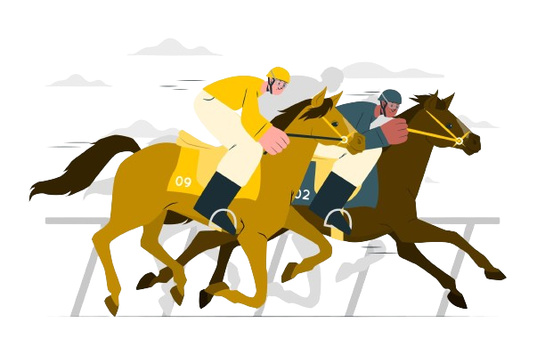

corsa dei cavalli

La Corsa dei Cavalli è un gioco di fortuna, inizialmente bisogna scegliere quanto caricare sul finto conto, poi bisogna decidere quanto puntare sul cavallo che si sceglierà tra i 7 disponibili. Comparirà una classifica, se il cavallo scelto arriverà primo, la somma puntata verrà aggiunta al conto, in caso contrario la cifra verrà scalata dal conto. Il gioco finisce quando si perdono tutti i soldi.